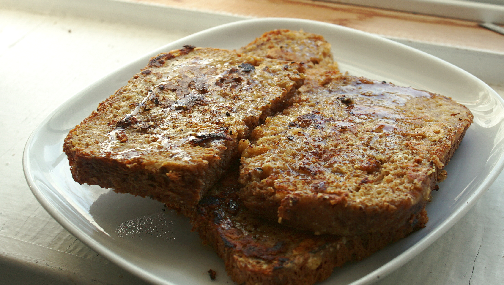

golden bread
2 servings — 15 minutes
In Quebec we call french toast 'pain doré', which translates to 'golden bread'. A fitting name. Pain doré is best made with older, and softer bread. Rekka's family recipe differs in the way that it requires dairy and eggs. Substituting eggs in recipes is never easy, but not impossible. We've tried many alternatives over the years and finally ended up using chickpea flour. It's an ingredient we already use in many recipes to mimic eggs, like in okonomiyaki and scrambled chickpea flour. When heated, chickpea flour thickens and crisps up while keeping its yellow color. We don't recommend using bananas as an egg replacer in this recipe. It's what we used to do, but it imparts too much flavor and makes it too sweet.
Oven version : Preheat oven at 180°C. Grease a baking dish, add sliced bread and pour the left-over milk mixture overtop. Cook until golden.
Bread : In this recipe I used some spelt sandwich bread.
Milk : Adding vinegar to plant milk makes it curdle and taste sour, it's a simple trick used to make dairy-free buttermilk. In recipes, buttermilk adds sharpness and flavor. You're welcome to use other types of plant milk, but some varieties (like rice milk) won't curdle as well.
 apple cider vinegar15 ml
apple cider vinegar15 ml soy milk125 ml
soy milk125 ml chickpea flour20 g
chickpea flour20 g nutritional yeast4 g
nutritional yeast4 g brown sugar15 g
brown sugar15 g vegan butter15 ml
vegan butter15 ml fresh bread4 slices
fresh bread4 slices maple syrupto taste
maple syrupto taste
dipping mix
- In a bowl, add 15 ml (1 tsp) of apple cider vinegar to 125 ml (1/2 cup) of soy milk. Let rest for 5 minutes.
- With a whisk, beat in 20 g (1/4 cup) of chickpea flour, 4 g (1 tbsp) of nutritional yeast and 15 g (1 tbsp) of brown sugar. Whisk until the mixture is clump-free, then pour into a shallow plate.
- Heat a non-stick pan at medium heat. Melt 15 ml (1 tbsp) of vegan butter (or vegetable oil). Dip one slice of bread into the milk mix, for 30 seconds each side and transfer to the hot pan. Cook until golden brown, for 2-3 minutes each side. Repeat for the rest of the bread. Serve with some maple syrup. Optionally, keep ready pieces of golden bread warm in the oven at 150 °C (300 °F), or at a low heat in a second pan.